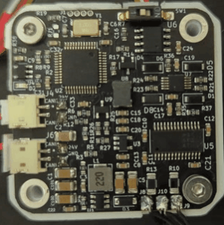
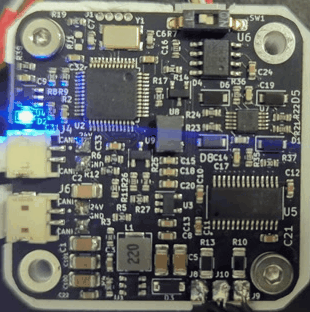
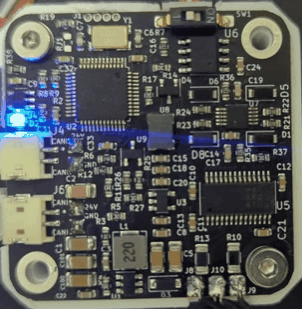

Troubleshooting
LED indication
| Normal operation | Calibration | Error mode |
|---|---|---|
| 3 short flashed and a pause
 |
Flashing every 0.5 seconds
 |
Solid LED, no flashing.
 |
If you have spectral firmware uploaded on your spectral BLDC LEDs will be in one of 3 states.
- Normal operation is when motor controller has no active errors and is calibrated
- Error mode is active if any error on the motor driver is active. List of possible errors:
- Temperature error
- Drv error
- Encoder error
- Vbus error
- Velocity error
- Current error
- Not calibrated
- Received ESTOP
- Watchdog error
- Calibration will flash when in calibration routine
To clear errors you can call UART command #Clear or CAN command "Send_Clear_Error"
Calling these commands will try to clear the error but if the error is still present it will activate again.
For example your Vbus is 2V and you are getting Vbus error. You call #Clear but the error does not go away because the Vbus is still 2V.
Another example is your Vbus is 2V and you are getting Vbus error. You now adjust your Vbus voltage to 24V. Vbus error is now gone but the driver is still in error state. Calling #Clear will place it in normal operation.
Having problems with your setup? Make sure to check these common problems:
- Magnet and encoder too far or too close
- Are you 100% sure your magnet is diametrically magnetised
- You have too big or too small velocity and current limits
- You hear crunching and whining sounds. Tune your PIDs especially current loop. Try to lower the current loop bandwidth during calibration
- You hear crunching and whining sounds. Your current limit might be too high, lower it.
- Are you motor phases in short or open circuit?
- Do you have a current limit set on your power supply?
- Is your CAN bus correctly terminated?
- Is your encoder magnet aligned in the center of the pcb and does not wobble?
- Is your motor compatible with the motor driver?
- Motor is wobbling left and right during calibration? One of your phases is disconnected
Magnet and encoder problems
- Recommended distance between encoder and the magnet is 1mm.
- Even if calibration reports that magnet status is ok; it can still be too close or too far from the encoder. You need to make sure in your mechanical design that distance between the magnet and the encoder is respected.
- Magnet too close or touching the sensor of the spectral BLDC can brick and even destroy the mcu.
- Magnet too far from the encoder will report invalid data from the encoder.
Low quality motors
- Windings are visually bad
- Bemf of the motor looks really bad and uneven
- Resistance between phases differs a lot
Motor temperature
- If termistor is not placed in motor windings your motor can overheat.
- Overheating can reduce performance and destroy your motor windings and BLDC controller
Driver temperature
If driver gets over some temperature it will automatically shut down. This is hardware feture of the hardware chip we use and cant be modified in software.
Calibration issuses
Check calibration page for these issues.
CAN bus issues
- Make sure you use correct baud rate; default is 1Mbit
- First and last node on the CAN bus should have termination resistors of 120ohm. To test that remove your device from any power and use multimeter to mesure resistance between CANH and CANL anywhere on the bus; it should be around 60 ohms.
- Use twisted pair wires.
UART issues
- Make sure you have same baud rate on spectral BLDC and host device. Default for spectral BLDC is 256000